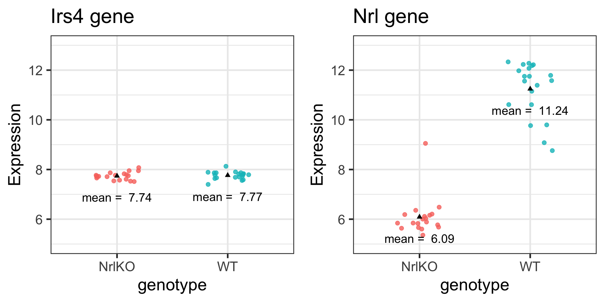

irsLim <- filter(twoGenes, gene == "Irs4") %>%
ggplot(aes(y = Expression, x = genotype, colour = genotype)) +
geom_jitter(size = 2, alpha = 0.8, width = 0.2) +
labs(title = "Irs4 gene") +
theme(legend.position = "none")
nrlLim <- filter(twoGenes, gene == "Nrl") %>%
ggplot(aes(y = Expression, x = genotype, colour = genotype)) +
geom_jitter(size = 2, alpha = 0.8, width = 0.2) +
labs(title = "Nrl gene") +
theme(legend.position = "none")
grid.arrange(irsLim + ylim(5, 13), nrlLim + ylim(5, 13), ncol = 2)Two group comparisons
Keegan Korthauer
January 21, 2025
Reminders
Project groups posted to Canvas last week
Intro Assignment due Thursday Jan 23
Initial Project Proposal due Monday Jan 27 (Feedback in-class Jan 30)
Today’s learning objectives
Understand how and when to carry out a t-test for comparing two population means
Identify when alternative approaches (e.g. nonparametric) are more appropriate
Avoid common pitfalls in interpretation of hypothesis tests and p-values
Central dogma of statistics

We want to understand a population (e.g. all individuals with a certain disease) but we can only study a random sample from it
Hypothesis Testing in Genomics
Retina presents a model system for investigating regulatory networks underlying neuronal differentiation
Nrl transcription factor is known to be important for Rod development
What happens if you delete Nrl?
Why a Hypothesis Test?
From the Akimoto et al. (2006) paper:
“we hypothesized that Nrl is the ideal transcription factor to gain insights into gene expression changes …”
Biological question
Is the expression level of gene A affected by knockout of the Nrl gene?
We can use statistical inference to answer this biological question!
Statistical inference
- Let’s observe and study a random sample to make conclusions about a population: measure gene expression on a random sample of mice
- Experimental design:
- 5 developmental stages (E16, P2, P6, P10, 4Weeks)
- 2 genotypes: Wild type (WT), Nrl Knockout (NrlKO)
- 3-4 replicates for each combination

Reading in / exploring the data
Data obtained from the Gene Expression Omnibus (GEO) repository (accession GSE4051)
Load directly into R session using
GEOquerypackage - see code below (which also refactors some of the metadata for convenience)Practice with this in Seminars 4 and 5 (Review lecture 3 for general principles)
# load libraries
library(GEOquery)
library(gridExtra)
library(tidyverse)
theme_set(theme_bw(base_size = 20))
# download and read in dataset
eset <- getGEO("GSE4051", getGPL = FALSE)[[1]]
# recode time points
pData(eset) <- pData(eset) %>%
mutate(sample_id = geo_accession) %>%
mutate(dev_stage = case_when(
grepl("E16", title) ~ "E16",
grepl("P2", title) ~ "P2",
grepl("P6", title) ~ "P6",
grepl("P10", title) ~ "P10",
grepl("4 weeks", title) ~ "4_weeks"
)) %>%
mutate(genotype = case_when(
grepl("Nrl-ko", title) ~ "NrlKO",
grepl("wt", title) ~ "WT"
))
pData(eset) <- pData(eset) %>%
mutate(dev_stage = fct_relevel(dev_stage, "E16", "P2", "P6", "P10", "4_weeks")) %>%
mutate(genotype = as.factor(genotype))
esetExpressionSet (storageMode: lockedEnvironment)
assayData: 45101 features, 39 samples
element names: exprs
protocolData: none
phenoData
sampleNames: GSM92610 GSM92611 ... GSM92648 (39 total)
varLabels: title geo_accession ... genotype (39 total)
varMetadata: labelDescription
featureData: none
experimentData: use 'experimentData(object)'
pubMedIds: 16505381
Annotation: GPL1261 Two example genes: Irs4 and Nrl
Biological questions
Is the expression level of gene Irs4 truly different in NrlKO compared to WT?
Is the expression level of gene Nrl truly different in NrlKO compared to WT?
We can’t answer these questions in general; we can only study these genes in collected data (gene expression values from a random sample of mice)
Extract the two genes of interest
# function to convert to tidy format
toLongerMeta <- function(expset) {
stopifnot(class(expset) == "ExpressionSet")
expressionMatrix <- exprs(expset) %>%
as.data.frame() %>%
rownames_to_column("gene") %>%
pivot_longer(cols = !gene,
values_to = "Expression",
names_to = "sample_id") %>%
left_join(pData(expset) %>% select(sample_id, dev_stage, genotype),
by = "sample_id")
return(expressionMatrix)
}
# convert to tidy format and extract two genes
twoGenes <- toLongerMeta(eset) %>%
filter(gene %in% c("1422248_at", "1450946_at")) %>%
mutate(gene = ifelse(gene == "1422248_at", "Irs4", "Nrl"))
twoGenes# A tibble: 78 × 5
gene sample_id Expression dev_stage genotype
<chr> <chr> <dbl> <fct> <fct>
1 Irs4 GSM92610 7.71 4_weeks NrlKO
2 Irs4 GSM92611 7.77 4_weeks NrlKO
3 Irs4 GSM92612 7.73 4_weeks NrlKO
4 Irs4 GSM92613 7.57 4_weeks NrlKO
5 Irs4 GSM92614 7.95 E16 NrlKO
6 Irs4 GSM92615 7.52 E16 NrlKO
7 Irs4 GSM92616 8.08 E16 NrlKO
8 Irs4 GSM92617 7.71 P10 NrlKO
9 Irs4 GSM92618 7.87 P10 NrlKO
10 Irs4 GSM92619 7.75 P10 NrlKO
# ℹ 68 more rowsWhat do you notice?
Visualizing Irs4 and Nrl genes in our sample
Formulating our hypotheses
Experimental design: (ignoring developmental time for now)
- 2 conditions: WT vs NrlKO
- observe the expression of many genes in a random sample of ~20 mice from each condition
Biological hypothesis: for some genes, the expression levels are different between conditions
Statistical hypotheses: (for each gene \(g=1,...,G\))
- H0 (null hypothesis): the expression level of gene \(g\) is the same in both conditions
- HA (alternative hypothesis): the expression level of gene \(g\) is different between conditions
How might we test H0?
Notation1
Population parameters (unknown/unobservable):
\(\mu_Y = E[Y]\) : the (population) expected expression of gene \(g\) in WT mice
\(\mu_Z = E[Z]\) : the (population) expected expression of gene \(g\) in NrlKO mice
Notation1
Random variables and statistics (we can estimate from data):
\(Y_i\) : expression of gene \(g\) in the WT sample \(i\)
\(Z_i\): expression of gene \(g\) in NrlKO sample \(i\)
\(Y_1, Y_2,..., Y_{n_Y}\) : a random sample of size \(n_Y\) WT mice
\(Z_1, Z_2,..., Z_{n_Z}\) : a random sample of size \(n_Z\) NrlKO mice
\(\bar{Y}=\frac{\sum_{i=1}^{n_Y}Y_i}{n_Y}\): sample mean of gene \(g\) expression from WT mice
\(\bar{Z}=\frac{\sum_{i=1}^{n_Z}Z_i}{n_Z}\): sample mean of gene \(g\) expression from NrlKO mice
Is there enough evidence to reject H0?
\(H_0: \mu_Y = \mu_Z\)
Statistical Inference: random samples are used to learn about the population
What we observe: sample averages: \(\bar{Y}\) vs \(\bar{Z}\)
# calculate mean of each gene and genotype
meanExp <- twoGenes %>%
group_by(gene, genotype) %>%
summarize(meanExpr = mean(Expression)) %>%
pivot_wider(names_from = genotype, values_from = meanExpr) %>%
mutate(diffExp = NrlKO - WT)
meanExp# A tibble: 2 × 4
# Groups: gene [2]
gene NrlKO WT diffExp
<chr> <dbl> <dbl> <dbl>
1 Irs4 7.74 7.77 -0.0261
2 Nrl 6.09 11.2 -5.15 This code uses tidy data wrangling functions to calculate:
- the mean expression of each gene per genotype group
- the difference in mean expression of each gene in Nrl KO vs WT groups
Is the difference between \(\bar{Y}\) and \(\bar{Z}\) enough to reject H0?
The sample means, \(\bar{Y}\) vs \(\bar{Z}\), by themselves are not enough to make conclusions about the population
What is a “large” difference? “Large” relative to what?
Consider this artificial version of Nrl
What can we use to interpret the size of the mean difference? \(\frac{\bar{Y}-\bar{Z}}{??}\)
“Large” difference relative to what?
“Large” relative to the observed variation:
\[\frac{\bar{Y}-\bar{Z}}{\sqrt{Var(\bar{Y}-\bar{Z})}}\]
Quantifying observed variation
Recall that if \(Var(Y_i)=\sigma_Y^2\), then \(Var(\bar{Y})=\frac{\sigma_Y^2}{n_Y}\)
Assume that the random variables within each group are independent and identically distributed (iid), and that the groups are independent. More specifically, that
- \(Y_1, Y_2,..., Y_{n_Y}\) are iid,
- \(Z_1, Z_2,..., Z_{n_Z}\) are iid, and
- \(Y, Z\) are independent.
Then, it follows that \(Var(\bar{Z}-\bar{Y})=\frac{\sigma_Z^2}{n_Z}+\frac{\sigma_Y^2}{n_Y}\)
- If we also assume equal population variances: \(\sigma_Z^2=\sigma_Y^2=\sigma^2\), then \[Var(\bar{Z}-\bar{Y})=\frac{\sigma_Z^2}{n_Z}+\frac{\sigma_Y^2}{n_Y}=\sigma^2\left[\frac{1}{n_Z}+\frac{1}{n_Y}\right]\]
Reflect
Stop!
But how can we calculate population variance \(\sigma\) if it is unknown?
…using the ______________ (combined, somehow)!
# calculate sample variance for each gene and genotype
twoGenes %>%
group_by(gene, genotype) %>%
summarize(groupVar = var(Expression))# A tibble: 4 × 3
# Groups: gene [2]
gene genotype groupVar
<chr> <fct> <dbl>
1 Irs4 NrlKO 0.0233
2 Irs4 WT 0.0240
3 Nrl NrlKO 0.594
4 Nrl WT 1.22 For example, for Nrl in WT: \[\hat{\sigma}_Y^2 = S_Y^2=\frac{1}{n_Y}\sum_{i=1}^{n_Y}(Y_i-\bar{Y})^2=1.22\]
Combining sample variances
Plug these estimates into chosen formula for the variance of difference of sample means:
- Assuming equal variance of Y’s and Z’s
\[\hat{Var}(\bar{Z_n}-\bar{Y_n})=\hat{\sigma}_{\text{pooled}}^2\left[\frac{1}{n_Y}+\frac{1}{n_Z}\right]\] \[\hat{\sigma}_{\text{pooled}}^2=S_Y^2\frac{n_Y-1}{n_Y+n_Z-2}+S_Z^2\frac{n_z-1}{n_Y+n_Z-2}\]
- Assuming unequal variance of Y’s and Z’s (Welch’s t-test)
\[\hat{Var}(\bar{Z_n}-\bar{Y_n})=\hat{\sigma}_{\bar{Z}_n-\bar{Y}_n}^2=\frac{S_Y^2}{n_Y}+\frac{S_Z^2}{n_Z}\]
Recall: the ‘hat’ (^) is used to distinguish an ‘estimate’ from a ‘parameter’
Test Statistic
‘Manual’ calculation of \(T=\frac{\bar{Z}_n-\bar{Y}_n}{\sqrt{\hat{Var}(\bar{Z_n}-\bar{Y_n})}}\) (for illustration):
## compute sample variance of each gene/genotype
theVars <- twoGenes %>%
group_by(gene, genotype) %>%
summarize(groupVar = var(Expression))
## compute sample size in each group
nY <- with(twoGenes, sum(genotype == "WT" & gene == "Nrl"))
nZ <- with(twoGenes, sum(genotype == "NrlKO" & gene == "Nrl"))
## assuming unequal true variance
s2DiffWelch <- theVars %>%
mutate(s2Welch = groupVar / ifelse(genotype == "WT", nY, nZ)) %>%
group_by(gene) %>%
summarize(s2Welch = sum(s2Welch))
meanExp$s2DiffWelch <- s2DiffWelch$s2Welch
## assuming equal true variance
s2Pooled <- theVars %>%
mutate(s2Pool = groupVar * ifelse(genotype == "WT",
(nY - 1) / (nY + nZ - 2),
(nZ - 1) / (nY + nZ - 2))) %>%
group_by(gene) %>%
summarize(s2Pool = sum(s2Pool))
meanExp$s2Diff <- s2Pooled$s2Pool * (1/nY + 1/nZ)# A tibble: 2 × 8
# Groups: gene [2]
gene NrlKO WT diffExp s2DiffWelch s2Diff t tWelch
<chr> <dbl> <dbl> <dbl> <dbl> <dbl> <dbl> <dbl>
1 Irs4 7.74 7.77 -0.0261 0.00243 0.00243 -0.529 -0.529
2 Nrl 6.09 11.2 -5.15 0.0925 0.0942 -16.8 -17.0 Can we now say whether the observed differences are ‘big’?
The difference is about half a standard deviation for Irs4 and ~17 standard deviations for Nrl
What to do with this statistic?
The test statistic \(T\) is a random variable because it’s based on our random sample
We need a measure of its uncertainty to determine how extreme our observed \(T\) is:
- If we were to repeat the experiment many times, what’s the probability of observing a value of \(T\) as extreme as the one we observed?
We need a probability distribution!
However, this is unknown to us so we need to make more assumptions
Null distribution assumptions
If we know how our statistic behaves when the null hypothesis is true, then we can evaluate how extreme our observed data is
- The null distribution is the probability distribution of \(T\) under H0
Let’s assume that \(Y_i\) and \(Z_i\) follow (unknown) probability distributions called \(F\) and \(G\):
\[(Y_i \sim F, \text{ and } Z_i \sim G)\]Depending on the assumptions we make about \(F\) and \(G\), theory tells us specific null distributions for our test statistic
Willing to assume that F and G are normal distributions?
2-sample t-test (equal variances): \[T\sim t_{n_Y+n_Z-2}\]
Welch’s 2-sample t-test (unequal variances): \[T\sim t_{<something\,ugly>}\]
Unwilling to assume that F and G are normal distributions?
But you feel that nY and nZ are large enough?
Then the t-distributions above (or even a normal distribution) are decent approximations
Review
Why could we assume the sampling distribution of \(T\) is normally distributed when we have a large sample size?
Student’s t-distribution
Summary: \(T=\frac{\bar{Z}_n-\bar{Y}_n}{\sqrt{\hat{Var}(\bar{Z_n}-\bar{Y_n})}}\) is a random variable, and under certain assumptions, we can prove that \(T\) follows a t-distribution
Recall that the t-distribution has one parameter: df = degrees of freedom
Hypothesis testing: Step 1
1. Formulate your hypothesis as a statistical hypothesis
In our example:
\[H_0: \mu_Y = \mu_Z \, \text{ vs} \,\,\, H_A: \mu_Y \neq \mu_Z\]
Hypothesis testing: Step 2
2a. Choose a test statistic
In our example: 2-sample t-test, with equal variance
2b. Compute the observed value for the test statistic
For our two example genes:
twoGenes %>%
group_by(gene) %>%
summarize(t = t.test(Expression ~ genotype, var.equal=TRUE)$statistic)# A tibble: 2 × 2
gene t
<chr> <dbl>
1 Irs4 -0.529
2 Nrl -16.8 Tip
This code uses a shortcut to computing the t-statistic using the t.test function
Hypothesis testing: Step 3
3. Compute the p-value
Definition
p-value: Probability of observing a test statistic at least as extreme as that observed, under the null sampling distribution
For our two example genes:
twoGenes %>%
group_by(gene) %>%
summarize(pvalue = t.test(Expression ~ genotype, var.equal=TRUE)$p.value)# A tibble: 2 × 2
gene pvalue
<chr> <dbl>
1 Irs4 6.00e- 1
2 Nrl 6.73e-19Tip
The t.test function also computes the p-value for us
In other words, assuming that H0 is true:
For Irs4, the probability of seeing a test statistic as extreme as that observed \((t = -0.53)\) is pretty high \((p = 0.6)\).
But for Nrl, the probability of seeing a test statistic as extreme as that observed \((t = -16.8)\) is extremely low \((p=6.76 \times 10^{-19})\)
Hypothesis Testing: Step 4
4. Make a decision about significance of results
The decision should be based on a pre-specified significance level (\(\alpha\))
\(\alpha\) is often set at 0.05. However, this value is arbitrary and may depend on the study.
Irs4
Using \(\alpha=0.05\), since the p-value for the Irs4 test is greater than 0.05, we conclude that there is not enough evidence in the data to claim that Irs4 has differential expression in WT compared to NrlKO models.
We do not reject H0!
Nrl
Using \(\alpha=0.05\), since the p-value for the Nrl test is much less than 0.05, we conclude that there is significant evidence in the data to claim that Nrl has differential expression in WT compared to NrlKO models.
We reject H0!
t.test function in R
Assuming equal variances
Two Sample t-test
data: Expression by genotype
t = -16.798, df = 37, p-value < 2.2e-16
alternative hypothesis: true difference in means between group NrlKO and group WT is not equal to 0
95 percent confidence interval:
-5.776672 -4.533071
sample estimates:
mean in group NrlKO mean in group WT
6.089579 11.244451 Not assuming equal variances
Welch Two Sample t-test
data: Expression by genotype
t = -16.951, df = 34.01, p-value < 2.2e-16
alternative hypothesis: true difference in means between group NrlKO and group WT is not equal to 0
95 percent confidence interval:
-5.772864 -4.536879
sample estimates:
mean in group NrlKO mean in group WT
6.089579 11.244451 Tip
Check out ?t.test for more options, including how to specify one-sided tests
Interpreting p-values
Which of the following are true? (select all that apply)
- If the effect size is very small, but the sample size is large enough, it is possible to have a statistically significant p-value
- A study may show a relatively large magnitude of association (effect size), but a statistically insignificant p-value if the sample size is small
- A very small p-value indicates there is a very small chance the finding is a false positive
Common p-value pitfalls
Caution
Valid inference using p-values depends on accurate assumptions about null sampling distribution
Caution
A p-value is NOT:
The probability that the null hypothesis is true
The probability that the finding is a “fluke”
A measure of the size or importance of observed effects
Preview: “Genome-wide” testing of differential expression
In genomics, we often perform thousands of statistical tests (e.g., a t-test per gene)
The distribution of p-values across all tests provides good diagnostics/insights
Is it mostly uniform (flat)? If not, is the departure from uniform expected based on biological knowledge?
We will revisit these topics in greater detail in later lectures
Different kinds of t-tests:
One sample or two samples
One-sided or two sided
Paired or unpaired
Equal variance or unequal variance
Types of Errors in Hypothesis Testing
\[ \alpha = P(\text{Type I Error}), \text{ } \beta = P(\text{Type II Error}), \text{ Power} = 1- \beta\]
H0: “Innocent until proven guilty”
The default state is \(H_0 \rightarrow\) we only reject if we have enough evidence
If \(H_0\): Innocent and \(H_A\): Guilty, then
Type I Error \((\alpha)\): Wrongfully convict innocent (False Positive)
Type II Error \((\beta)\): Fail to convict criminal (False Negative)
Willing to assume that F and G are normal distributions?
2-sample t-test (equal variances): \[T\sim t_{n_Y+n_Z-2}\]
Welch’s 2-sample t-test (unequal variances): \[T\sim t_{<something\,ugly>}\]
Unwilling to assume that F and G are normal distributions?
But you feel that nY and nZ are large enough?
Then the t-distributions above (or even a normal distribution) are decent approximations
Stop!
What if we aren’t comfortable assuming the underlying data generating process is normal AND we aren’t sure our sample is large enough to invoke the CLT?
What are alternatives to the t-test?
First, one could use the t test statistic but use a permutation approach to compute its p-value; we’ll revisit this topic later
Non-parametric tests are an alternative:
Wilcoxon rank sum test (Mann Whitney) uses ranks to test differences in population means
Kolmogorov-Smirnov test uses the empirical CDF to test differences in population cumulative distributions
Wilcoxon rank sum test
Rank all data, ignoring the grouping variable
Test statistic = sum of the ranks for one group (optionally, subtract the minimum possible which is \(\frac{n_Y(n_Y+1)}{2}\))
- Alternative but equivalent formulation based on the number of \(y_i, z_i\) pairs for which \(y_i \geq z_i\)
The null distribution of such statistics can be worked out or approximated
wilcox.test function in R
Kolmogorov-Smirnov test (two sample)
Null hypothesis: F = G, i.e. the distributions are the same
Estimate each CDF with the empirical CDF (ECDF)
\[\hat{F}(x)=\frac{1}{n}\sum_{i=1}^n{I[x_i\leq{x}]}\]
- Test statistic is the maximum of the absolute difference between the ECDFs1
\[max|\hat{F}(x)-\hat{G}(x)|\]
- Null distribution does not depend on F, G (!)
Kolmogorov-Smirnov test (two sample)
ks.test function in R
Irs4gene <- twoGenes %>%
filter(gene == "Irs4")
ks.test(Irs4gene$Expression[Irs4gene$genotype == "WT"],
Irs4gene$Expression[Irs4gene$genotype == "NrlKO"])
Exact two-sample Kolmogorov-Smirnov test
data: Irs4gene$Expression[Irs4gene$genotype == "WT"] and Irs4gene$Expression[Irs4gene$genotype == "NrlKO"]
D = 0.28421, p-value = 0.3278
alternative hypothesis: two-sidedNrlgene <- twoGenes %>%
filter(gene == "Nrl")
ks.test(Nrlgene$Expression[Nrlgene$genotype == "WT"],
Nrlgene$Expression[Nrlgene$genotype == "NrlKO"])
Exact two-sample Kolmogorov-Smirnov test
data: Nrlgene$Expression[Nrlgene$genotype == "WT"] and Nrlgene$Expression[Nrlgene$genotype == "NrlKO"]
D = 0.95, p-value = 5.804e-10
alternative hypothesis: two-sidedDiscussion
What test(s) might be appropriate if your sample size is just barely large enough to invoke CLT, but you also have suspected outliers?
If more than one test is appropriate (e.g. t-test, Wilcoxon, and KS), which should we report?
What is generally more important for results interpretation: the effect size or the p-value?
What should you do if methods that are equally appropriate and defensible give very different answers?